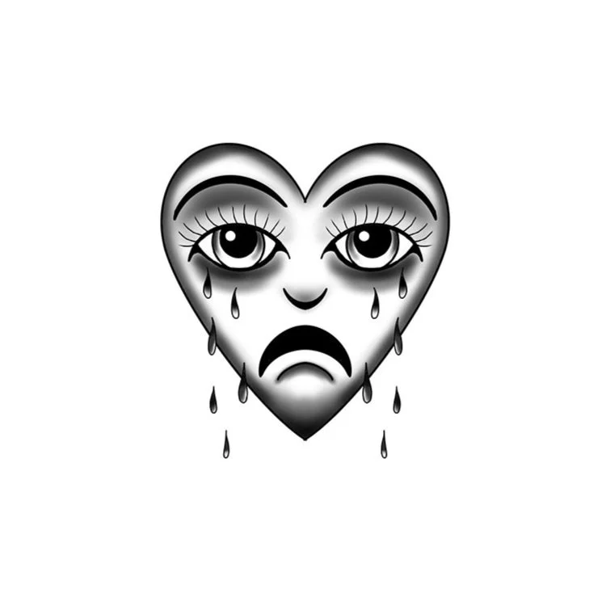

Hello there, friend. Welcome...
"I've noticed you. Even if you haven't noticed me. I see what you're doing. What you're trying to do and I just wanted to say: "it means something."
I think there's many things that we mean to say but don't. Only to realize it's too late. The damage is done, your partner is leaving you.
Your best friend has chosen to leave this world. Your little sister overdosed, again. Your father's liver finaly threw in the towel and he's gone too.
All the things you could have said but didn't. Why didn't you say them?
There are those who are left. There are those who still need to hear them. You're still here. You're still staying silent. Say them. Say those things.
Even if it feels weird. Even if they look at you odd and worry. Leave with your mind empty and your heart full."
- He told himself this, by way of telling others.
